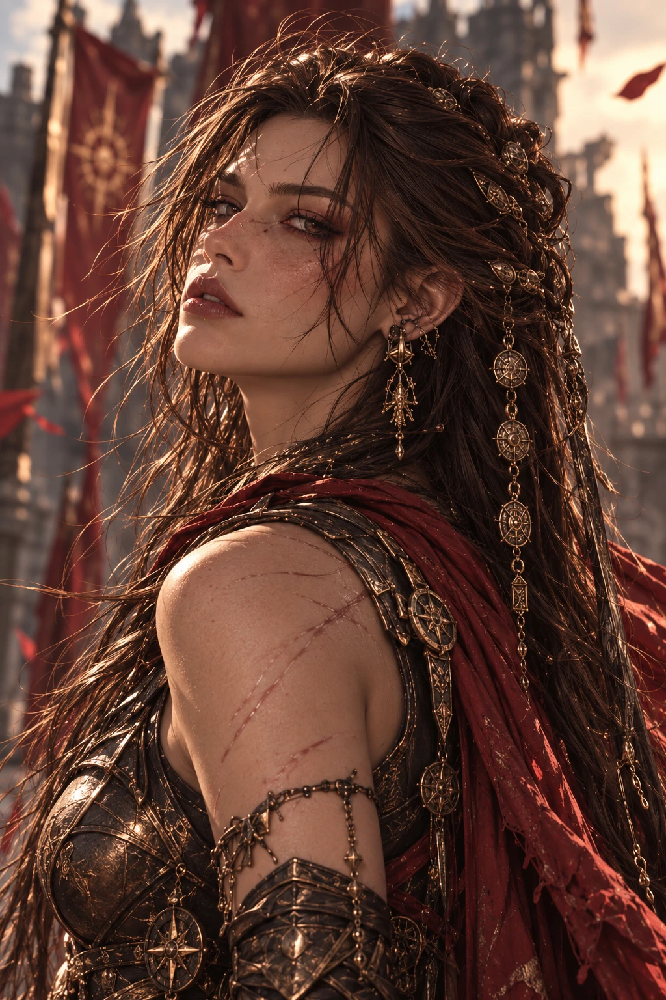
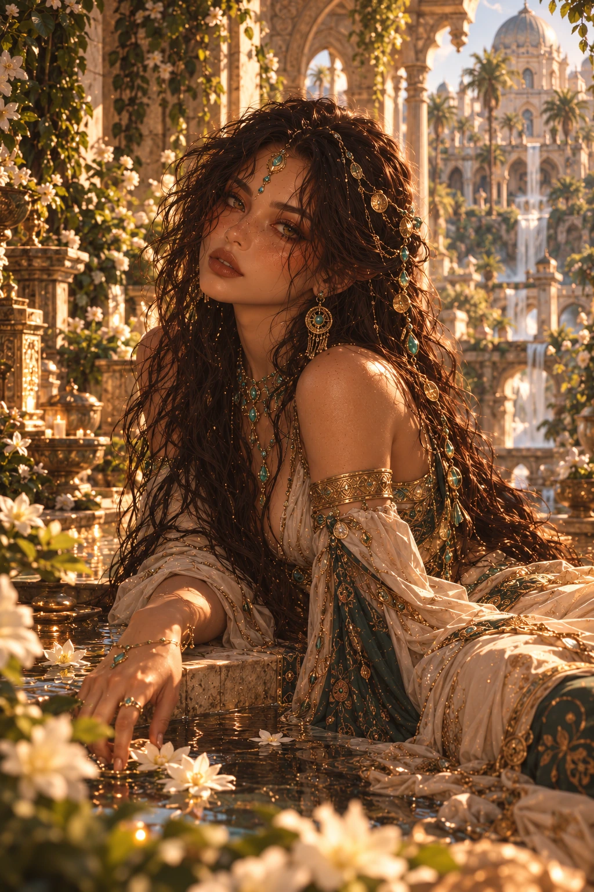

Seven goddesses
The Goddesses
Seven sisters. Seven kingdoms.
Equira
Yuna
Goddess of BalanceYuna’s power exists at the boundary between life and death. To her, these two concepts are not opposites; they are two complementary parts of the same cycle. Where one eliminates the other, order breaks down.
Explore ↗Nymora
Nora
Goddess of NightNora does not see the future as a single immutable, prewritten line.
Explore ↗Veritasa
Talia
Goddess of TruthFor Talia, truth is not merely the line between right and wrong.
Explore ↗
Drakvar
Dara
Goddess of WarDara does not see war itself as sacred.
Explore ↗Armonia
Lena
Goddess of Life and CreativityFor Lena, creating is not merely bringing something into being from nothing.
Explore ↗Ignivar
Kira
Goddess of DestructionFor Kira, destruction is not the opposite of creation.
Explore ↗
Serapha
Nilera
Goddess of HealingFor Nilera, healing is not closing a wound.
Explore ↗